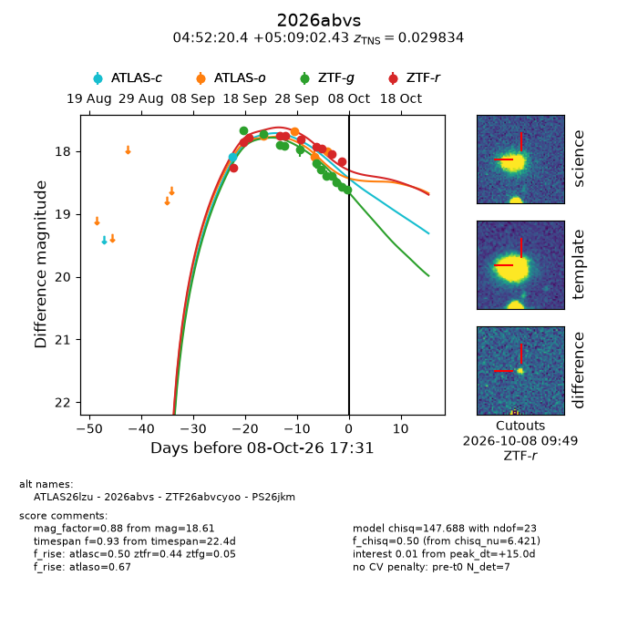
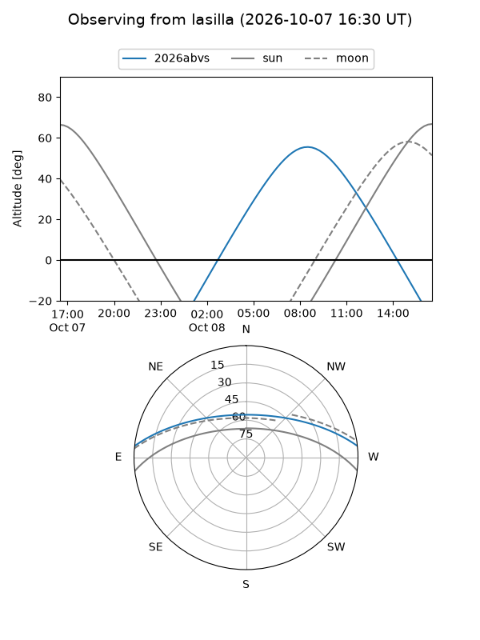
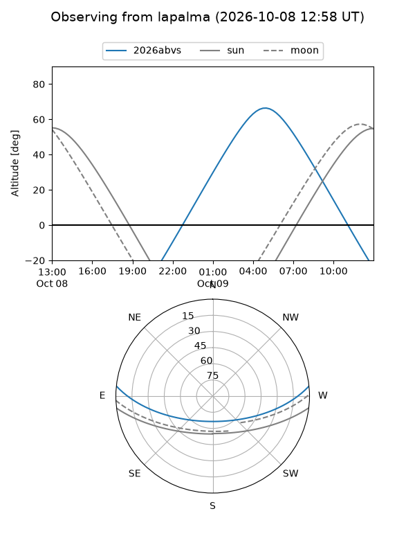
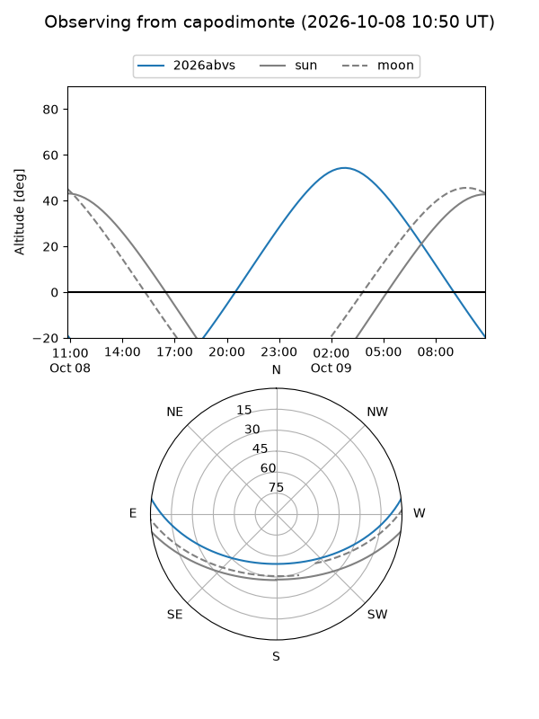
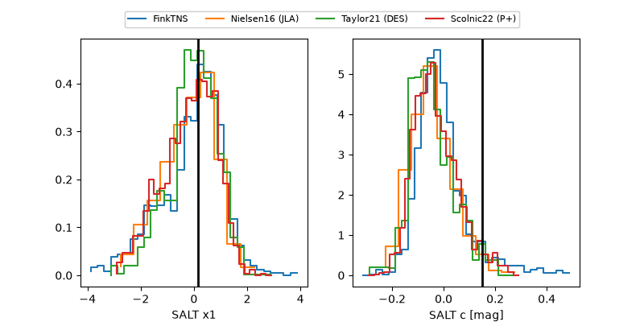

2026abvs
Target 2026abvs at 2026-10-08 17:34
Aliases and brokers:
FINK-ZTF: ztf.fink-portal.org/ZTF26abvcyoo
Lasair-ZTF: lasair-ztf.lsst.ac.uk/objects/ZTF26abvcyoo
ALeRCE-ZTF: alerce.online/object/ZTF26abvcyoo
YSE-PZ: ziggy.ucolick.org/yse/transient_detail/2026abvs
TNS name: wis-tns.org/object/2026abvs
Direct TNS query: direct search
alt names
ZTF26abvcyoo (ztf,fink_ztf)
2026abvs (tns,yse)
PS26jkm (panstarrs)
ATLAS26lzu (atlas)
Coordinates:
equatorial (ra, dec) = 73.0849,+5.15068
equatorial (HMS+DMS) = 04:52:20.38,+05:09:02.43
galactic (l, b) = (193.4736,-23.53050)
Flags:
TNS type: SN II
TNS redshift: 0.0298
peak dt: +15.0
Photometry:
last atlasc=18.09, atlaso=18.00, ztfg=18.61, ztfr=18.16
1 atlasc, 4 atlaso, 12 ztfg, 10 ztfr detections
Lightcurve

Visibility



Additional plots
